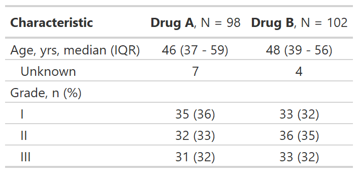

![[Experimental]](../help/figures/lifecycle-experimental.svg) The following themes are available to use within the gtsummary package.
Use the
The following themes are available to use within the gtsummary package.
Use the set_gtsummary_theme() function to set a theme.
| theme_gtsummary {gtsummary} | R Documentation |
The following themes are available to use within the gtsummary package.
Use the set_gtsummary_theme() function to set a theme.
theme_gtsummary_journal(journal = "jama")
theme_gtsummary_compact()
theme_gtsummary_printer(
print_engine = c("gt", "kable", "kable_extra", "flextable", "huxtable", "tibble")
)
journal |
String indicating the journal theme to follow.
|
print_engine |
String indicating the print engine. Default is |
theme_gtsummary_journal(journal=)
journal = "jama"
sets theme to align with the JAMA reporting guidelines
large p-values are rounded to two decimal places
in tbl_summary() the IQR is separated with a dash, rather than comma
in tbl_summary() the percent symbol is not printed next to percentages
theme_gtsummary_compact()
tables printed with gt, flextable, and huxtable will be compact with smaller font size and reduced cell padding
theme_gtsummary_printer(print_engine=)
"gt" sets the gt package as the default print engine
"kable" sets the knitr::kable() function as the default print engine
"flextable" sets the flextable package as the default print engine
"kable_extra" sets the kableExtra package as the default print engine
"huxtable" sets the huxtable package as the default print engine
Use reset_gtsummary_theme() to restore the default settings
Review the themes vignette to create your own themes.
Example

# Setting JAMA theme for gtsummary
set_gtsummary_theme(theme_gtsummary_journal("jama"))
# Themes can be combined by including more than one
set_gtsummary_theme(theme_gtsummary_compact())
set_gtsummary_theme_ex1 <-
trial %>%
dplyr::select(age, grade, trt) %>%
tbl_summary(by = trt) %>%
add_stat_label() %>%
as_gt()
# reset gtsummary theme
reset_gtsummary_theme()